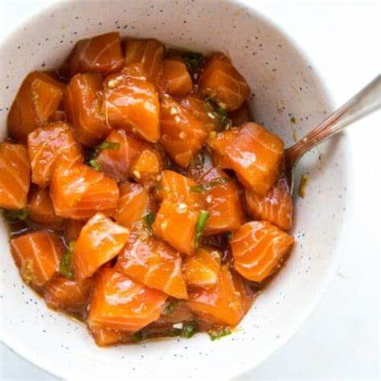

Salmon Poke Recipe

Description
Mmm… There’s really only one dish I crave when I’m hankering for a delicious combination of contrasting textures and vibrant colors and flavors that take me to the beach. A main dish of native Hawaiian cuisine, poke is basically diced raw fish, traditionally tuna, salmon, or octopus, marinated in Asian seasonings. It has strong Japanese influences, which is why the traditional marinade is made from ingredients such as soy sauce and rice vinegar.
Ingredients
- 1 lb sushi-grade salmon
- 2 tsp fresh ginger, peeled and grated
- 1 Tbsp toasted sesame oil, to taste
- 2 tsp rice vinegar, to taste
- 2 to 3 Tbsp liquid aminos, to taste
- 1 to 3 tsp sriracha, to taste
- 2 stalks green onion, finely chopped
- 2 tsp sesame seeds
- sea salt, to taste
Steps
- Obtain sushi-grade salmon (packaging should specify “sushi grade” and it should be frozen upon purchase).
- Thaw sushi-grade salmon in your refrigerator until completely thawed. Place salmon on a clean cutting board on top of a clean counter top. Use a knife to remove the salmon skin.
- Chop the salmon into bite-sized pieces. I like chopping it into small pieces, but you can go for larger cubes if you’d like.
- Place salmon in a clean mixing bowl (or regular bowl).
- Stir together the ingredients for the sauce in a measuring cup or bowl and pour over the chopped salmon. Stir well until everything is combined. Taste the salmon for flavor and add more of anything you’d like!
- Enjoy in a poke bowl, sushi burger, and/or on top of a green salad.
Back to index